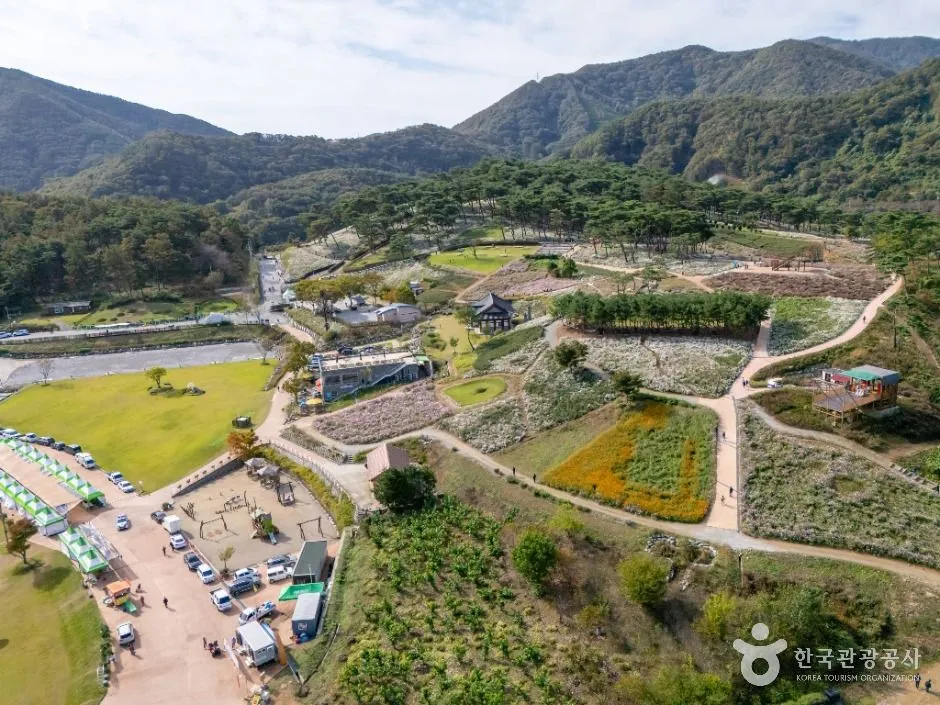
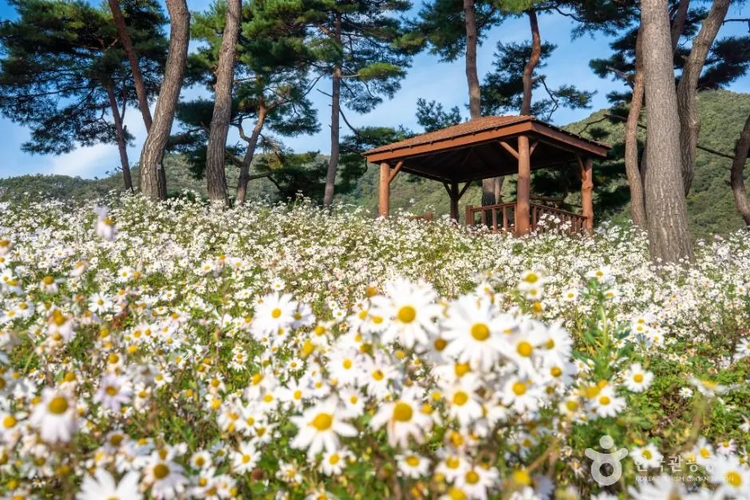
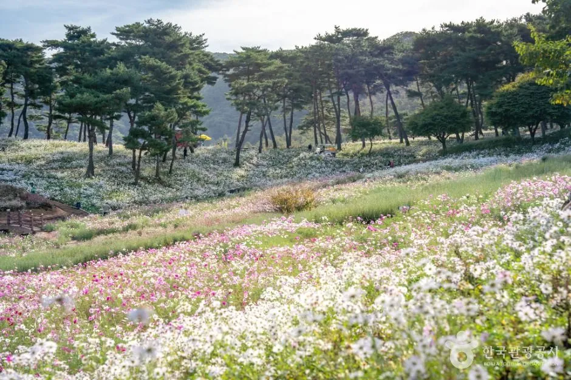
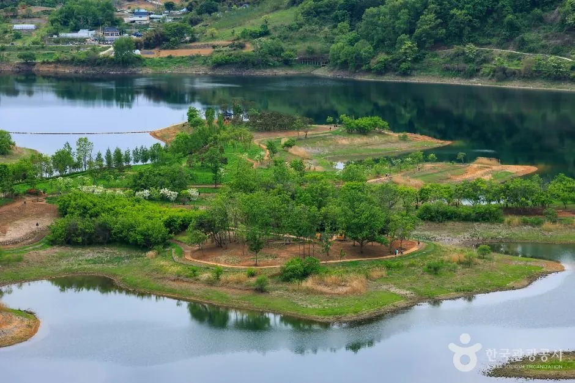
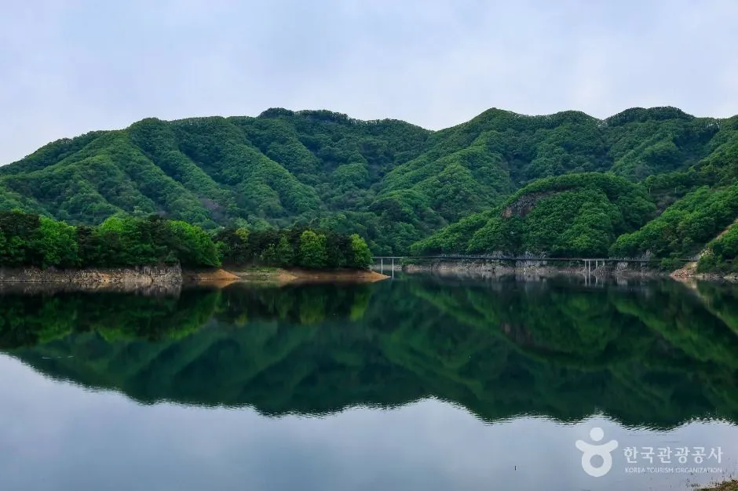
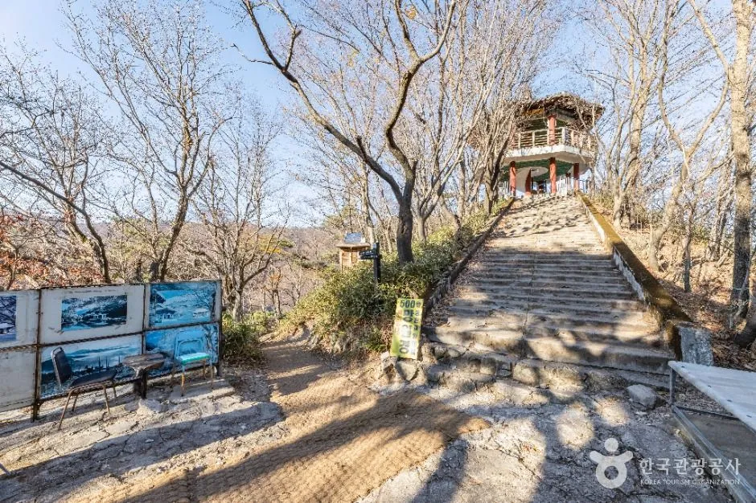
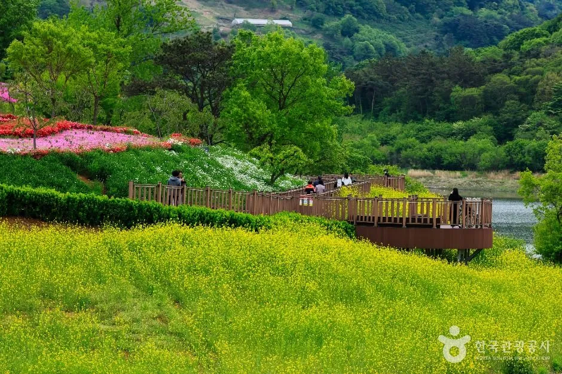

▲ 산자락과 암벽 아래로 하얀 구절초가 이어지는 구절초 지방정원(한국관광공사 게시 사진, 잎이 푸르러 가을 개화기 사진은 아닌 것으로 보임) 사진=한국관광공사
"11일이면 주말이 딱 두 번인데, 언제 가야 덜 막히지?" 제19회 정읍 구절초 꽃축제(2026년 10월 8일~18일)를 앞두고 가장 많이 나올 질문이다. 정읍시가 공개한 행사 개요에서 확인되는 답은 단순하다. "차량 막힘없이 원활한 방문은 오전이 좋다"는 것, 그리고 주차장은 제1주차장부터 채우고 만차 시 제2~4주차장으로 안내한다는 것이다.
이 글은 정읍시 공식 행사 페이지와 지역 언론 보도를 대조해 요금·환급 상품권, 운영시간, 셔틀, 주차, 혼잡 시간대(추정), 내장산·옥정호 연계 코스를 자동차 여행 기준으로 정리했다. 공식 자료에서 확인하지 못한 항목은 본문에 그대로 "확인 못 함"으로 적었다.
1. 개요 — 38만㎡ 정원, 소나무 숲 아래 하얀 구절초
구절초 지방정원은 '꽃밭 하나'가 아니라 다섯 개 테마 정원으로 이뤄진 넓은 공간이다. 위키트리·전북 지역 언론 보도에 따르면 축제장은 약 38만㎡이며 소나무 약 3,000그루 아래로 구절초 15만 본이 피어난다고 소개됐다. 다만 꽃밭 면적은 매체마다 표기가 달라(예: 다른 자료에서는 '9만㎡', 여행 매체는 '2만 7천 평'), 이 글에서는 수치 비교보다 정원 규모가 크다는 점만 참고하기를 권한다.
| 항목 | 내용 |
|---|---|
| 기간 | 2026년 10월 8일(목)~10월 18일(일), 11일간 |
| 장소 | 전북특별자치도 정읍시 산내면 매죽리 571 구절초 지방정원 (도로명: 산내면 청정로 926-65, 한국관광공사 정보) |
| 매표 시간 | 매표 08:30~17:30(정읍시), 운영 종료 18:00(투어전북, 입장권 판매는 17:30까지) |
| 개막식 | 10월 10일(토) 15:00~17:30 (지역 언론 보도) |
| 문의 | 063-539-5697 (정읍시 산림녹지과 구절초정원팀) |
▲ 산자락과 암벽 아래로 하얀 구절초가 이어지는 구절초 지방정원(한국관광공사 게시 공식 사진, 촬영 시기는 확인 못 함) 사진=한국관광공사
가장 최신의 운영 공지는 정읍시 공식 페이지에서 확인할 수 있다. 정읍구절초꽃축제 행사개요 바로가기
2. 요금 — 7,000원 내고 4,000원 돌려받는 구조
입장료는 받되 상당액을 지역 상품권으로 돌려주는 방식이다. 성인 7,000원 입장권에는 '정원사랑 상품권' 4,000원이 함께 제공되며, 축제장 내 매장과 정읍 지역 찻집 등에서 현금처럼 쓸 수 있다고 정읍시가 안내했다. 환급 비율은 연령별로 다르다.
| 구분 | 개인 | 단체 | 환급 상품권 |
|---|---|---|---|
| 성인 | 7,000원 | 단체 요금 별도(금액 확인 못 함) | 4,000원 (실질 3,000원) |
| 청소년·군인·경로 | 5,000원 | 단체 요금 별도(금액 확인 못 함) | 3,000원(보도 기준, 공식 페이지는 2,000~4,000원 범위) |
| 어린이 | 3,000원 | 단체 요금 별도(금액 확인 못 함) | 2,000원(보도 기준) |
| 정읍시민 | 무료 (국가유공자·장애인은 증빙 시 무료로 보도됨) | ||
ℹ️ 우대·환급 조건은 현장 확인이 필요하다
'전북사랑도민증' 소지자와 자매결연 도시 주민에 대한 우대가 있다는 보도가 있으나, 할인인지 전액 환급인지 보도마다 표현이 달라 정확한 조건은 확인하지 못했다. 해당되는 경우 출발 전 정읍시(063-539-5697)에 확인하는 편이 안전하다. 체험 프로그램은 일부 유료일 수 있다는 안내도 있다.
3. 자동차 접근·주차 — '오전 도착'이 공식 권장
공식 행사 개요의 주차 안내는 짧지만 핵심을 담고 있다. "제1주차장 이용 → 만차 시 2, 3, 4주차장 이용", "차량 막힘없이 원활한 방문은 오전이 좋습니다"가 전부다. 보도는 시가 2,350대 규모의 주차장을 확보했다고 전했다. 다만 주차장 개수와 요금은 공식 페이지 외 자료에서 표현이 엇갈려 확인하지 못했으니 현장 안내 요원 지시를 따르는 것이 확실하다.
| 항목 | 내용 | 근거 |
|---|---|---|
| 주차 규모 | 약 2,350대 | 지역 언론 보도 |
| 주차 순서 | 제1주차장 → 만차 시 제2~4주차장 | 정읍시 행사 개요 |
| 주차 요금 | 무료라는 안내가 있으나 공식 페이지에서는 확인 못 함 | 투어전북 요약(간접) |
| 무료 순환 셔틀 | 산내면 소재지↔축제장, 09:00~17:30 | 지역 언론 보도 |
| 내비 검색 | '구절초 지방정원' 또는 산내면 청정로 926-65 | 한국관광공사 |
| 교통 통제 구간·우회로 | 확인 못 함 | - |

▲ 정원 산책로와 주변 주차 공간이 함께 보이는 구절초 지방정원 전경(공식 게시 사진, 축제 기간의 주차장 배치와는 다를 수 있음) 사진=한국관광공사
✅ 운전자 체크포인트
· 산내면 소재지 쪽 진입로는 좁은 지방도 성격이라 주말 낮 시간대 정체가 생길 가능성이 높다(추정)
· 11일간 주말은 10월 10~11일(개막 주말)과 17~18일(마지막 주말). 한글날(10월 9일)과 이어지는 연휴 성격의 9일 전후도 붐빌 수 있다(추정)
· 오전 개장 직후(08:30 전후)에 도착하면 제1주차장 배정과 산책 모두 여유롭다는 것이 공식 권장의 취지
· 주차 대기가 길어지면 산내면 소재지에서 무료 셔틀로 갈아타는 방법이 있는지 현장 안내에 따를 것
· 산길 구간이 있어 해 진 뒤 귀가는 시야에 주의(매표가 17:30 마감이므로 오후 늦게 도착하면 입장 자체가 어렵다)
4. 혼잡 시간대와 프로그램 — 무엇이 몇 시에 있나
공식 혼잡 통계는 확인하지 못했다. 아래 표는 프로그램 일정과 매표 시간을 겹쳐 본 추정이므로 참고용으로만 보자.
| 날짜 | 프로그램(보도 기준) | 혼잡 전망(추정) |
|---|---|---|
| 10/8(목) | 개막 첫날, 체험·꽃밭 산책 | 평일이라 상대적으로 여유(추정), 오전 방문 권장 |
| 10/9(금·한글날 공휴일) | 공휴일 연휴 성격 | 붐빌 수 있음(추정) |
| 10/10(토) | 개막식 15:00~17:30, 개막 공연(가수 라인업 보도) | 낮~오후 최고조 가능 |
| 10/11(일) | 전통 줄타기 공연, 건강 강연(보도) | 낮 시간 붐빔 |
| 10/12~10/16 | 평일, 꽃밭 콘서트·체험 | 비교적 한산 |
| 10/17(토) | 태권도 시범, 기간 중 토크 콘서트(시인 나태주 등 출연 보도, 날짜별 배정은 확인 못 함) | 낮~오후 붐빔 |
| 10/18(일) | 폐막 주말 | 마지막 날 방문객 집중 가능 |

▲ 소나무 숲 속 정자 옆에 흰 꽃이 무리 지어 핀 모습(공식 게시 사진, 구절초로 보이나 잎이 푸르러 촬영 시기는 가을이 아닌 것으로 보임) 사진=한국관광공사

▲ 소나무 아래로 분홍·흰 꽃이 넓게 이어지는 정원 풍경(공식 게시 사진, 구절초가 아닌 다른 꽃일 수 있으며 촬영 시기는 확인 못 함) 사진=한국관광공사
체험 프로그램으로는 구절초 족욕, 화분 만들기·꽃 도시락(꽃김밥) 만들기 등이 소개됐고, 이동이 어려운 방문객을 위한 소형 전기차와 꽃열차 운행, 지프라인·출렁다리 체험도 보도됐다. 먹거리로는 정읍 한우, 구절초 두부, 산채비빔밥, 다슬기탕 등이 안내됐다. 다만 각 프로그램의 시간표와 유료 여부는 공식 프로그램표로 확인 못 한 항목이 많다.
5. 연계 코스 — 내장산·옥정호를 하루에 묶는다면
공식 관광 안내가 제시한 연계 코스는 크게 세 가지다. 구절초 축제장 인근(같은 정읍시 관내)에 내장산국립공원이 있다. 정확한 거리는 확인하지 못했다.
| 코스 | 동선 | 운전자 팁 |
|---|---|---|
| 코스 1 | 구절초 축제 → 내장산 산행 | 10월 초중순은 단풍 절정 이전. 2026년 절정 예상은 10월 25일~11월 7일(별도 기사 참고) |
| 코스 2 | 구절초 축제 → 정읍사공원 → 무성서원 | 시내·문화 유적 중심, 주차 부담 비교적 적음(추정) |
| 코스 3 | 구절초 축제 → 우화정 → 내장호 | 내장호 주변 호수길 산책 |
| 보너스 | 옥정호(임실 운암면)의 붕어섬 생태공원·출렁다리 | 행정구역은 임실. 축제장에서의 정확한 소요 시간은 확인 못 함 |

▲ 호수에 작은 섬이 떠 있는 옥정호 붕어섬 일대 전경(한국관광공사 게시 사진) 사진=한국관광공사

▲ 산 능선이 호수에 비치는 옥정호(한국관광공사 게시 사진) 사진=한국관광공사
내장산 쪽으로 이어갈 때는 별도 확인이 필요하다. 단풍 성수기에는 공원 안쪽 차량이 통제되고 내장호주차장에서 무료 셔틀을 이용하는 방식이라 축제 기간에는 해당하지 않을 가능성이 높지만, 통제 여부는 공단 공지를 확인해야 한다. 자세한 통제 구간과 셔틀은 내장산 단풍 차량 통제·셔틀 기사에서 정리했다.

▲ 내장산 일대 숲길과 전망 정자(한국관광공사 게시 사진, 정확한 촬영 지점은 확인 못 함, 낙엽 진 늦가을 풍경으로 보여 10월 초 축제 시기와는 다름) 사진=한국관광공사

▲ 호숫가 전망 데크와 노란 꽃밭이 함께 보이는 옥정호 일대(공식 게시 사진, 봄철 촬영으로 보이며 축제 시기와는 다름) 사진=한국관광공사
6. 당일 동선 예시와 준비물
| 시간 | 일정 | 비고 |
|---|---|---|
| 08:00~08:30 | 제1주차장 도착·매표 대기 | 매표 08:30 시작 |
| 08:30~11:30 | 5개 테마 정원 산책·사진 | 상품권 받아 찻집에서 사용 |
| 11:30~13:30 | 정읍 한우·구절초 두부·산채비빔밥 점심 | 축제장 또는 인근 식당 |
| 13:30~16:00 | 연계 코스 1~3 중 선택 (내장호·우화정 등) | 가을 해가 빨리 짐 |
구절초 정원은 산자락이라 낮과 밤 기온 차가 크다. 겉옷과 편한 신발을 챙기고, 상품권은 남기지 말고 축제장 안에서 쓰는 편이 편하다.
7. 요약
제19회 정읍 구절초 꽃축제는 10월 8일~18일, 정읍시 산내면 구절초 지방정원에서 열리며, 성인 7,000원 중 4,000원을 상품권으로 돌려받아 실질 부담은 3,000원 수준이다. 매표는 08:30~17:30이고, 산내면 소재지와 축제장을 잇는 무료 순환 셔틀은 09:00~17:30 운행된다고 보도됐다.
운전자에게 가장 중요한 공식 팁은 '오전에 가라'는 것이다. 주차는 약 2,350대 규모로 제1주차장 우선, 만차 시 제2~4주차장으로 안내된다. 혼잡 시간대와 교통 통제 구간은 공식 통계를 확인하지 못해 추정으로만 적었으며, 연계 코스는 내장산·정읍사공원·무성서원·우화정·내장호가 제시된다. 옥정호 붕어섬은 임실군 소재라 별도 이동 시간 확인이 필요하다.